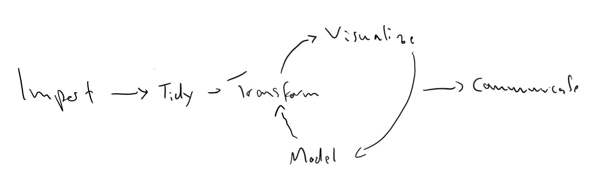

What is R?
You wouldn’t be reading this if you didn’t already have some idea what R is, but I think it’s worthwhile to briefly discuss it anyways. R is a statistical computing and data analysis environment that is widely used in academia, industry, and the public sector. It is a free and open source implementation of the S programming language, which was created in the 1970s with interactive data analysis in mind. Here’s what that means:
R is interactive – R works like a really fancy pocket calculator that allows you to do calculations, explore data, and analyse data quickly and on the fly.
R is focused on data analysis – Right out of the box, R gives you a powerful tool belt for data analysis. More than in many other programming languages, data and statistics are at the core of R and there are built-in data structures and functions that make data analysis easier.
Although R is a proper programming language2, data analysis is undoubtedly its main focus. So much so, that some people call R a domain specific programming language. Others say it’s an environment for interactive data analysis that has a programming language. In any case, R can be powerful one-stop-shop for the whole data analysis workflow:

Data collection
Data wrangling3
Data Visualization
Modeling
Communication
Some people claim that you can use R for everything.↩︎
This part of the data analysis workflow involves data cleaning and transformation and is also known as data munging, or “80% of data science”↩︎